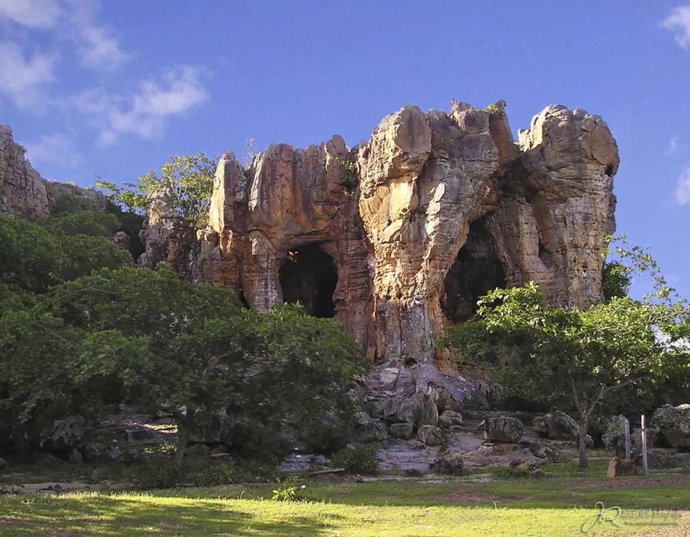
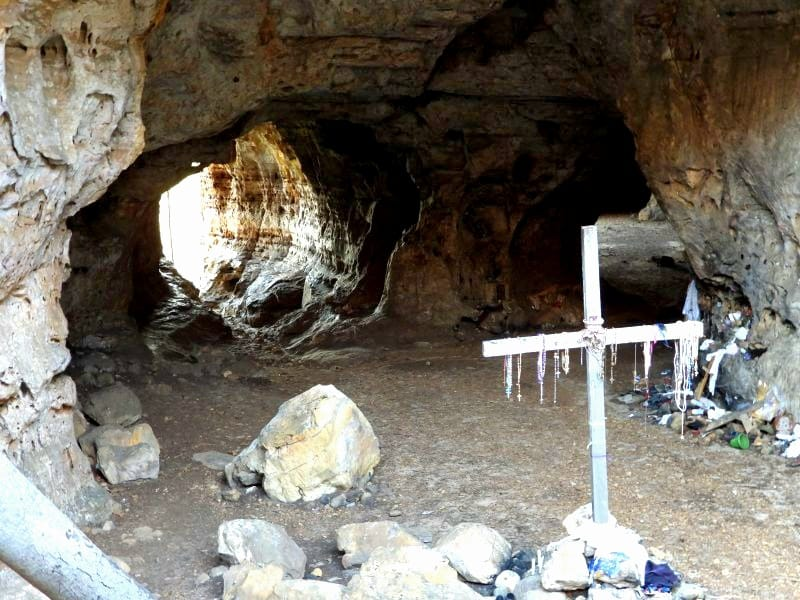
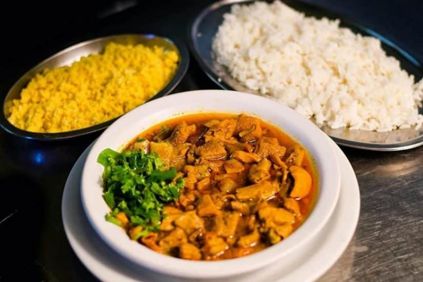

Onde fica Castelo do Piauí?
Castelo do Piauí fica no vale do rio Poti, na região Centro-Norte do estado, a cerca de 190 km ao norte de Teresina. Segundo o IBGE, a cidade tem 19.288 habitantes (Censo 2022), com estimativa de 19.669 para 2025, numa área de 2.378,846 km² e densidade de 8,11 hab/km². Quem nasce lá é castelense. O IDHM é 0,587 (dado de 2010) e a escolarização de 6 a 14 anos chega a 99,12% (2022).
Como a cidade surgiu e por que se chama Castelo?
Tudo começou com o povoado de Rancho dos Patos, que pertenceu inicialmente à freguesia de Santo Antônio do Surubim, atual Campo Maior. A vila de Marvão, que deu origem ao município, foi criada em 1761 e instalada em 1762, quando Teresina ainda não existia. O nome mudou várias vezes (Rancho dos Patos, Marvão, Castelo, Marvão de novo) até virar Castelo do Piauí, em 1948. Uma das trocas foi forçada por lei federal contra nomes repetidos. O nome “Castelo” vem da paisagem: uma pedra em forma de castelo às margens do rio Poti e da rodovia PI-115. Com o tempo o território foi se dividindo, e Juazeiro do Piauí, por exemplo, foi desmembrado de Castelo em 1995 e instalado em 1997.

O que visitar em Castelo do Piauí?
O passeio começa pela Pedra do Castelo, a mesma que deu nome à cidade. Ela é um monumento geoarqueológico usado desde o início da colonização para enterramentos e cultos religiosos cristãos e afro-brasileiros. Fica a cerca de 20 km da sede e tem uma gruta de 15 m de altura e 300 m de perímetro. É conhecida por viajantes desde o fim do século XVIII, cercada de lendas e visitada em romarias. Lá dentro, há salões, arcos, torres de pedra e pinturas rupestres que mostram a presença humana desde a pré-história.
O mesmo rio que marca a pedra forma o Cânion do Rio Poti, onde um passeio de barco de cerca de 45 minutos atravessa o desfiladeiro, com parada para banho. Os dois atrativos costumam ser visitados no mesmo dia, com almoço na cidade entre um e outro. Quem quiser ir além encontra outros pontos inventariados em um estudo de geoturismo: o Pico dos André, as Juntas Poligonais de Boa Vista do Custódio, o Castelo de Pedra das Barrocas e a Baixa do Cajueiro. O Poti também aproxima Castelo dos vizinhos, e já foi proposto um consórcio turístico, idealizado pelo Sebrae com a prefeitura, reunindo Castelo do Piauí, São João da Serra, São Miguel do Tapuio, Buriti dos Montes, Assunção do Piauí e Juazeiro do Piauí.
Do que vive a cidade?
A base histórica é a pecuária: a criação extensiva de gado se firmou na segunda metade do século XIX e sustentou as primeiras fazendas voltadas ao mercado. A agricultura foi complementar, voltada ao abastecimento, com arroz, feijão e milho. O IBGE registra PIB per capita de R$ 10.267,96 em 2021, num território de caatinga e cerrado. O rio Poti volta a aparecer no futuro da cidade, com a Barragem de Castelo: o governo iniciou a contratação de um estudo de viabilidade para a obra, que ficaria entre Castelo do Piauí e Juazeiro do Piauí, com capacidade de cerca de 1,024 bilhão de metros cúbicos. A ideia é ampliar a segurança hídrica numa região de chuvas irregulares. Por enquanto é só um estudo, e a obra não está confirmada.
Uma das cidades mais antigas do Piauí
A história oficial de Castelo começa em 1742, quando o lugar foi elevado a freguesia, sob a invocação de Nossa Senhora do Desterro. Freguesia era a unidade religiosa e administrativa do período colonial, formada em torno de uma igreja. A vila de Marvão só viria em 1761, quando Teresina ainda não existia.
Fé e festas do povo castelense
A devoção a Nossa Senhora do Desterro nasceu com a cidade e segue viva. O título lembra a fuga da Sagrada Família para o Egito, e “desterro” quer dizer viver longe da própria terra. A cultura junina também é forte: um trabalho acadêmico da UESPI registra os festejos de Nossa Senhora do Desterro e o Arraiá do Povo entre as tradições locais.

Sabores do sertão piauiense
A mesa de Castelo segue a tradição do Piauí, em que o cuscuz, o beiju com manteiga, a cajuína e a Maria Isabel aparecem entre os símbolos da culinária do estado. São pratos simples, feitos com ingredientes da roça, e é essa comida caseira que costuma receber quem visita a Pedra do Castelo e o cânion.
Um território que já foi maior
Castelo nem sempre teve o tamanho de hoje. Em 1911, o município tinha três distritos, entre eles São João e Tapuió. Com o tempo, esses territórios se emanciparam, e Juazeiro do Piauí foi um dos últimos, em 1995. Por isso tantas cidades vizinhas têm laços de origem com Castelo e dividem com ela o rio Poti.